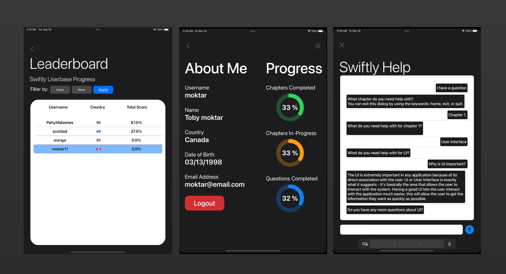

Swiftly
An iPad based app which aims to teach students about Swift and iOS development.


Swiftly is an easy-to-use iPadOS based application that was developed from September 2021 to December 2022 as part of my fourth year capstone project.
Swiftly was developed in Xcode using the Swift programming language. The user interface for Swiftly was created programmatically through Apple's SwiftUI framework while following a MVVM desing pattern. The application contains several fundamental iOS features, including, but not limited to CollectionView with custom cells, Multiple asynchronous API calls, TableView with custom cells, Integrated IBM chatbot, and device-specific color themes.